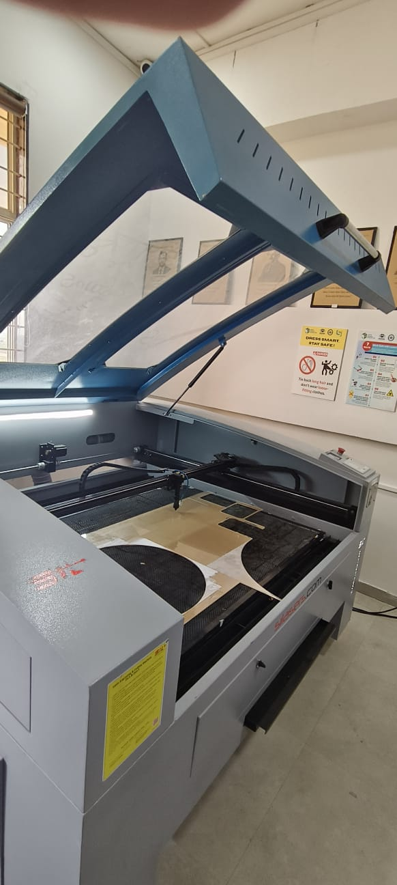
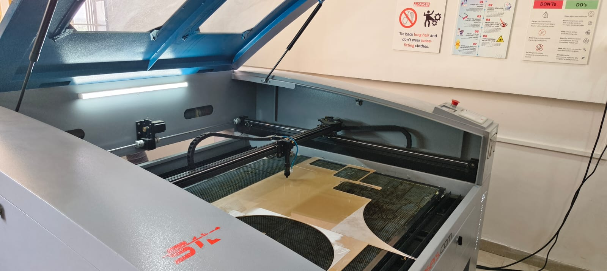
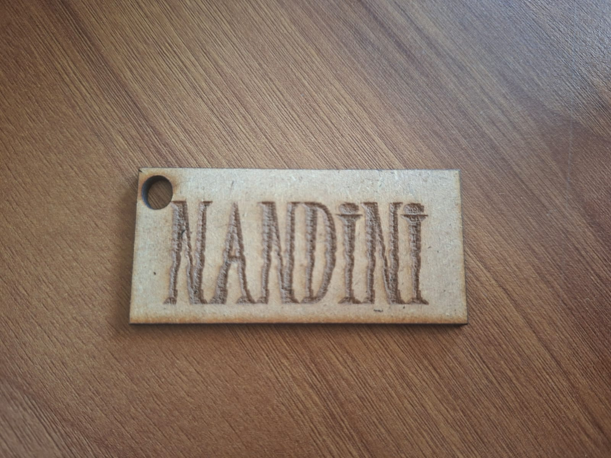
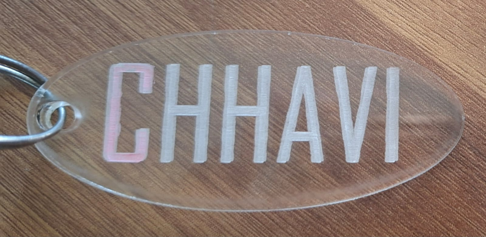
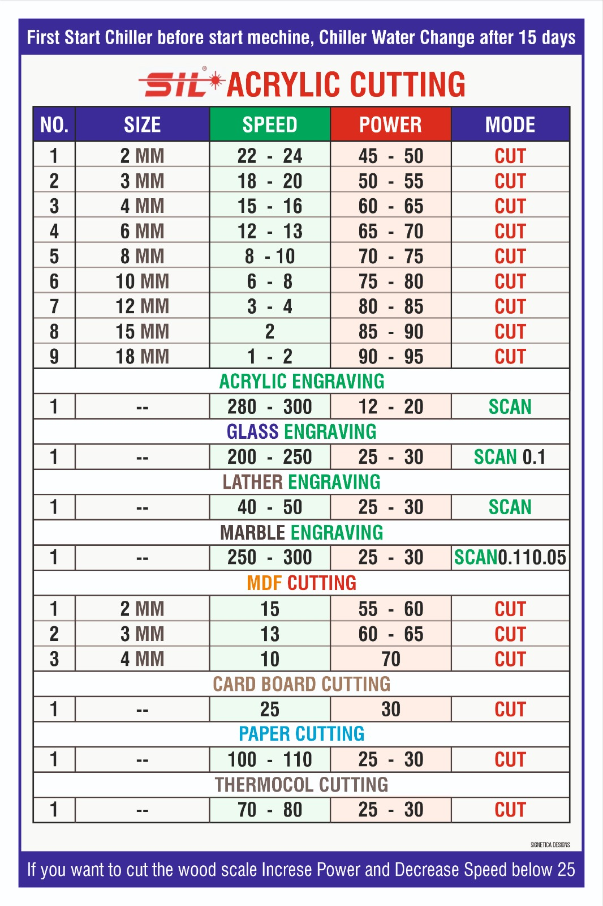

Laser Cutting & Engraving Practice
← Back to PortfolioToday’s session focused on Laser Cutting and Engraving techniques. Under the guidance of Kiran Sir, we learned machine setup, material calibration, acrylic cutting, cardboard cutting, engraving techniques and documentation practices.
We prepared the laser cutting machine by starting the chiller unit, checking the compressor and aligning the focus lens. Safety instructions were reviewed before beginning operation.

Our first trial was performed on cardboard using Power = 15 and Speed = 250–300 mm/s. The cuts were clean with slight edge darkening. Kiran Sir explained that cardboard requires low power and high speed to prevent burning.
We tested acrylic sheets using Power = 45 and Speed = 280–300 mm/s. The edges were smooth and polished. Kiran Sir emphasized adjusting power levels for different acrylic thicknesses.

We engraved a personalized wooden name tag with the text “NANDINI”. This demonstrated how engraving differs from cutting operations.

A transparent acrylic keychain was engraved with the name “CHHAVI”. The engraving quality depended on correct focus and speed settings.

We observed laser head movement along the X and Y axes and recorded calibration values. All machine settings and results were documented for future reference.

| Material | Power | Speed (mm/s) | Notes |
|---|---|---|---|
| Cardboard | 15 | 250–300 | Clean cut, avoid burning |
| Acrylic | 45 | 280–300 | Smooth edges, polished finish |
| Acrylic Engraving | 12–20 | 280–300 | Used for keychains |
This session provided practical exposure to laser cutting and engraving technology. Through hands-on experimentation with cardboard and acrylic, I learned how machine parameters directly influence quality. Kiran Sir’s guidance helped me understand the balance between theoretical machine charts and practical adjustments required during real manufacturing.